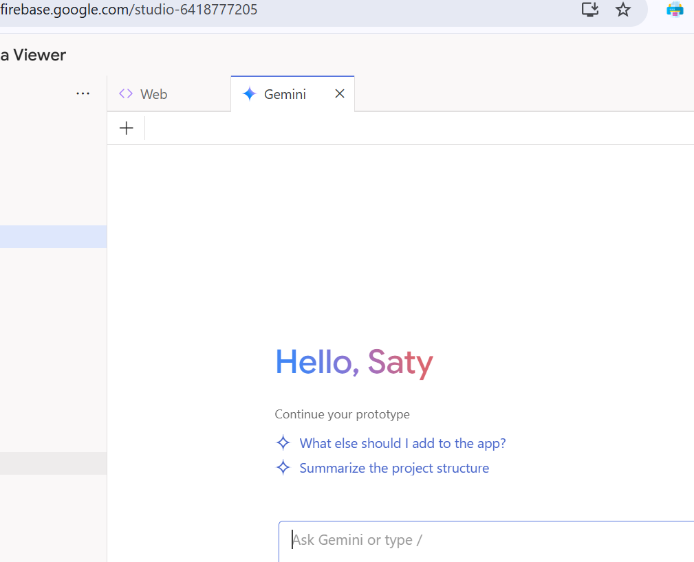

<!-- ********************************** -->
#### &nbsp;
# HW2: two web apps, using LLMs :)
###In this HW, you will experience the awesome power of AI-based code generation - for two entire web apps - one that uses an API for data access, another that reads data from an uploaded file and displays it.
<div style="height:1px;border:1px solid #BBBBBB;"/>
###Q1. Here you will use Replit's coding agent, by prompting it to do this:
#### &bull; create a Python-based web app that fetches and displays stock price data, given just a stock symbol (eg AAPL)
#### &bull; the API to use for fetching stock prices is Twelve Data [https://twelvedata.com/]
#### &bull; the data displayed would be, a '7 day price chart'
#### &bull; frontend to use for the data display: streamlit
###<a href="pics/ReplIt_signup.png">Sign up</a> for a Replit account, if you don't already have one. In the <a href="pics/ReplIt_what_5ffcc.png">innocuous</a> textbox, put in your prompt, watch it create a plan (ie steps to code your app!). Look through the plan, make changes if needed, then approve it. Watch it get to work!
###Once it creates the files (the most important being, 'app.py'), you will see the agent preview your app:
###
###Crazy! Put in a stock symbol (AAPL is an easy choice), watch as the past 7 day stock price is displayed. Wow.
###Look through app.py to see how it works! THE POINT IS THIS: until quite recently, YOU would have been asked to create such an app.py!! But now, you can "simply ask for it" [exactly like your team Lead would ask YOU!].
###Next, download app.py so you can see it run locally:
###
###On your laptop, install the following Python modules if you don't already have them:
###
###Now you can run app.py locally, via the 'streamlit' command:
###
###
###Again put in a stock symbol and verify that the app can run locally as well, how neat.
###Done! In real-life you could DEPLOY the code on Replit via the 'Deploy' button, or upload app.py to many other sites [including github.io, Vercel, Firebase, Heroku and many more, including your own] - so that you will have a public URL which you can give to others for running your app [ie. you'd 'ship' your app!].
<div style="height:1px;border:1px solid #BBBBBB;"/>
###Q2. You are going to use mightly Google's Gemini LLM, via the Firebase Studio AI coding IDE, to create a different web app:
###
###Log in, with your usual Google credentials.
###There is the plain/minimal/unadorned prompt box again (but, looks can be deceiving) :)
###
###Tell it what you want:
####&bull; a data viewer app, which will display data that's in an uploaded CSV
####&bull; a simple tabular display is sufficient
####&bull; tech stack: NextJS for data handling, React for UI components, Tailwind for styling the UI
###Watch it get to work! After a bit you are presented with a dev 'plan', which you can edit if you like to have the agent modify the plan, then approve it. Cool! The AI generates ALL the code for the web app.
###When the app UI pops up, upload a CSV file, watch it be rendered as a table:
###
###You can optionally chat with the agent to add more functionality (eg. have it display two numerical columns in an X-Y scatterplot), or even edit the AI-generated code directly:
###
###
###Speaking of code, be sure to examine the code structure, ie what files were generated (be sure to look in app/, components/) - INSANE! UNTIL RECENTLY, YOU had to know ALL these intricate details [it's not that the code syntax is hard (it is not), it's understanding the architecture (components, event flow, data flow)]! But now, as if by magic, AI creates NextJS code that reads the data and has it be displayed via React, which is set up to be styled using Tailwind's CSS directives. If you are curious, you can ask Gemini to explain the architecture/stack, or even query it for explanations of individual NextJS calls, React components, etc.
###Want CSV files? Kaggle has a bunch:
###
###I downloaded the 'cars' dataset ['Cars Datasets 2025.csv'] from https://www.kaggle.com/datasets/abdulmalik1518/cars-datasets-2025 for displaying in my app:
###
###If you are able to upload a .csv and have it be displayed, you're all done :) Again, in RL you'd deploy the entire codebase (much more complex than the single app.py in Q1!) to any server, including <a href="https://firebase.google.com/docs/app-hosting">Firebase.</a>
<div style="height:1px;border:1px solid #BBBBBB;"/>
<div style="height:1px;border:1px solid #BBBBBB;"/>
###Please post your qns (and their answers!) on the 'hw2' Piazza page.
###**What to submit** (as a single .zip):
####&bull; two screenshots, for Q1, of your app running - one running on Replit, one running locally
####&bull; one screenshot of your app running in Firebase Studio, for Q2 - should show the code tab, and the app (displaying an uploaded CSS file as a table)
###**ENJOY!**
<div style="height:1px;border:1px solid #BBBBBB;"/>
<div style="height:1px;border:1px solid #BBBBBB;"/>
<!-- ********************************** -->